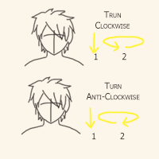

HEAD AND NECK EXERCISE

People with spinal or neck problems are not advised to do this exercise.
STEP 3
Slowly, but gently, rotate the head in a CLOCKWISE motion, starting from the chest area, moving the head toward the right shoulder, then toward the back, moving the head toward the left shoulder, and then toward the front of your body once again.
(Do not return to your base-line position), but simply continue on to a second count, and finally to a third count.
Return to your base-line position.
Repeat step three, in a COUNTER-CLOCKWISE motion.
Starting from the chest area once again, then moving the head toward the left shoulder, then toward the back, then toward the right shoulder, returning to the chest area.
Continue along to your second count, and finally on to your third count.
Return to your base-line position.